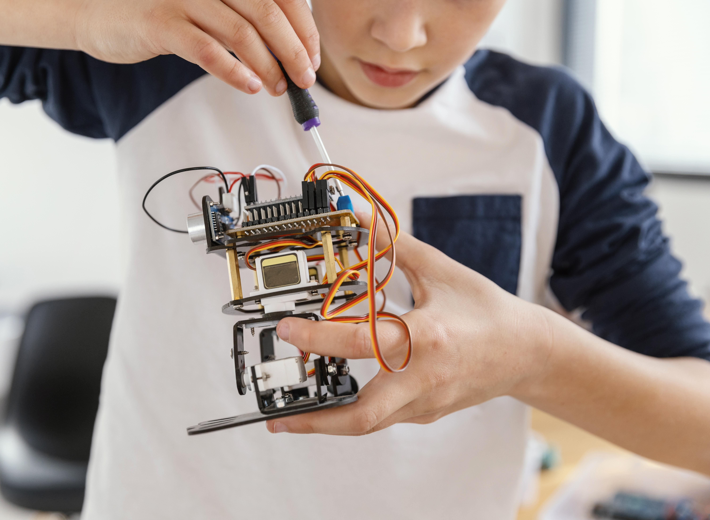

.png)
TECNOSER
Robótica y pensamiento computacional
El laboratorio de robótica del Gimnasio El Hontanar, Robotic Labs, es un espacio donde los estudiantes imaginan, diseñan, construyen y ponen en funcionamiento sus propios proyectos. Este entorno integra conocimiento, tecnología y valores para formar estudiantes capaces de resolver problemas reales con ingenio y determinación.
¿Cómo desarrollar pensamiento tecnológico durante el año escolar, sin depender solo de la teoría?
En mesas multipropósito para el trabajo colaborativo, los estudiantes diseñan, programan y construyen prototipos. El proceso va desde la planeación digital —con diseño asistido por computador— hasta la fabricación con impresora 3D y cortadora láser, hasta lograr dispositivos funcionales en el Maker Space.
Los proyectos parten de situaciones auténticas: automatización del riego del huerto, robots-tanque para recolectar agua y drones impresos en 3D, todos ideados y ejecutados por los propios estudiantes.



- HABILIDADES STEM INTEGRALES -
Fortalecemos habilidades STEM desde primaria,
sin procesos aislados entre áreas
Soluciones automatizadas
Eficiencia
En el laboratorio se crean soluciones que optimizan tareas repetitivas, incorporando sensores de movimiento y sonido para mejorar la eficiencia de procesos cotidianos dentro del colegio.
Prototipos con propósito
Innovación
Se desarrollan robots que transportan energía solar, modelos de drones impresos en 3D y sistemas automatizados para el servicio del comedor escolar, todos propuestos por los propios estudiantes.
Trabajo y perseverancia
Valores
La robótica educativa fortalece habilidades técnicas, pero también fomenta el trabajo en equipo, la perseverancia y la responsabilidad. Cada máquina es el resultado de la colaboración y la mejora continua.
Semillero de robótica de alto nivel competitivo
El semillero de robótica participa en competencias intercolegiales y universitarias de alto nivel, obteniendo primeros lugares y posiciones destacadas en torneos regionales e internacionales. Estas experiencias consolidan el liderazgo académico del Gimnasio El Hontanar.

Prototipos funcionales en nuestro Maker Space equipado y seguro
En Robotic Labs, cada prototipo demuestra que la tecnología puede estar al servicio del cuidado del entorno, la optimización de recursos y el bienestar colectivo. Aquí, aprender robótica no es solo programar: es imaginar, construir y comprobar que las ideas transforman la realidad.
Ven a conocer nuestro Maker Space: un laboratorio seguro y completamente dotado donde los estudiantes desarrollan competencias tecnológicas construyendo, experimentando y programando.


.png)
.jpg)